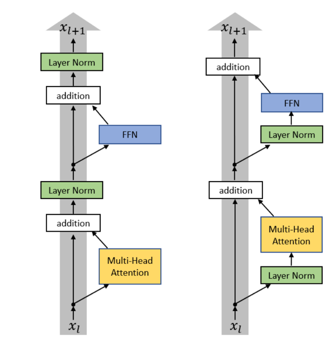

<script setup>
import { withBase } from 'vitepress'
</script>

<article class="native-document format-course" data-format="course" data-design="linux-notebook" aria-label="第 3 讲 · Transformer 架构与超参数">
<header class="document-intro note-hero">
<p class="note-kicker">CS336学习笔记 <span>课程讲义与阅读</span></p>
<h1 id="lecture-03" tabindex="-1">第 3 讲 · Transformer 架构与超参数 <a class="header-anchor" href="#lecture-03" aria-label="章节链接">&#8203;</a></h1>
<p class="note-deck">一个词元的向量依次经过注意力和前馈层。残差连接保留输入，RoPE 编入位置，SwiGLU 的中间宽度取决于参数预算。</p>
</header>
<nav class="note-jump" aria-label="本篇导读"><a href="#input">从嵌入到预测</a><a href="#block">残差连接与归一化</a><a href="#positions">旋转位置编码</a><a href="#width">前馈层与参数量</a><a href="#tradeoffs">宽度、深度与数值稳定性</a></nav>
<section class="document-section note-panel" aria-labelledby="input">
<h2 id="input" tabindex="-1">从嵌入到预测 <a class="header-anchor" href="#input" aria-label="章节链接">&#8203;</a></h2>
<p>上一讲得到了一批形状为 [B,T,d] 的嵌入。要用它预测下一个词元，每个位置都得保留自己的信息，并从前文取出有用的内容。因果自注意力在位置之间交换信息，前馈网络再单独更新每个位置的特征。这两个子层合在一起，就是一个 Transformer 块。</p>
<p>把多个块叠起来，最后一层仍为每个位置输出一个 d 维向量。将它投影到词表大小，就得到每个候选词元的分数。训练时，位置 t 的目标是输入序列中紧随其后的词元。</p>
</section>
<section class="document-section note-panel" aria-labelledby="block">
<h2 id="block" tabindex="-1">残差连接与归一化 <a class="header-anchor" href="#block" aria-label="章节链接">&#8203;</a></h2>
<p>每个子层都有一条残差连接：子层加工输入 x，输出再和 x 相加。归一化放在加法之前还是之后，会改变这条路径。原始 Transformer 在子层输出与输入相加之后做 LayerNorm，作业里的 Transformer 把归一化移到子层入口。读图时从下往上，先只沿灰色箭头走，再看注意力和前馈网络两个分支。</p><figure class="note-figure"><figcaption>第 3 讲归一化位置对照，取自本地课程整理稿。绿色方块标记归一化；原图用 Layer Norm 演示位置，A1 实现选用 RMSNorm。</figcaption></figure><p>只看一个子层，Post-Norm 写成 Norm(x + F(x))，Pre-Norm 写成 x + F(Norm(x))。对后一式求导，前面的 x 直接贡献一个恒等项。即使叠了很多层，梯度仍能沿这条路径回传。这也解释了为什么挪动归一化的位置会影响优化。至于用 LayerNorm 还是 RMSNorm，是另一个选择。</p>
</section>
<section class="document-section note-panel" aria-labelledby="positions">
<h2 id="positions" tabindex="-1">旋转位置编码 <a class="header-anchor" href="#positions" aria-label="章节链接">&#8203;</a></h2>
<p>每个位置的向量经过三组投影，分别得到查询 Q、键 K 和值 V。查询与可见位置的键做点积，按头维度的平方根缩放，再经过 softmax 得到权重。用这些权重对值向量求和，当前位置便能汇集前文的信息。RoPE 为每对相邻分量设置一个频率，位置越远，旋转角度越大。设同一对分量在位置 m、n 的旋转矩阵分别为 Rₘ、Rₙ，旋转保长度，点积满足</p><div class="math-block" data-tex="(R_m q)^\top(R_n k)=q^\top R_{n-m}k"></div><p>同一个词出现在不同位置时仍使用同一个词嵌入，但旋转后的点积取决于两个位置之差。作业笔记里的角度表展示了这一步在张量上怎样实现。<a href="/cs336/a1-transformer#angles">A1 · 角度表的一行</a></p>
</section>
<section class="document-section note-panel" aria-labelledby="width">
<h2 id="width" tabindex="-1">前馈层与参数量 <a class="header-anchor" href="#width" aria-label="章节链接">&#8203;</a></h2>
<p>设模型宽度为 d，普通前馈层先扩到 4d，再投影回 d。忽略偏置，两块矩阵共有 8d² 个参数。SwiGLU 将输入送入两条投影，其中一条经过 SiLU，两条结果逐元素相乘，再投影回模型宽度。设中间宽度为 h，这三块矩阵共有 3dh 个参数。</p><div class="math-block" data-tex="3dh=8d^2 \quad\Rightarrow\quad h=8d/3"></div><p>例如 d = 768 时，普通层的中间宽度是 3072，等参数的门控层宽度是 2048。若直接沿用 3072，实验同时改变了激活函数和参数量。确定预算后再比较验证损失与耗时，才能判断门控带来了什么。</p>
</section>
<section class="document-section note-panel" aria-labelledby="tradeoffs">
<h2 id="tradeoffs" tabindex="-1">宽度、深度与数值稳定性 <a class="header-anchor" href="#tradeoffs" aria-label="章节链接">&#8203;</a></h2>
<p>固定参数预算，较深的模型增加顺序执行的层数，较宽的模型改变矩阵形状和单步并行度。即便两种配置的参数量相近，实际吞吐也可能不同。读课件中的模型对比时，应同时记录宽度、层数、前馈宽度和运行条件。</p><p>排查训练中的数值异常，先看数值是在哪一层变大的。QK 归一化约束注意力打分的尺度，输出端的 z-loss 则约束词表 logits 的对数配分函数。下一讲把序列加长，看看注意力要多算多少次点积。<a href="https://github.com/stanford-cs336/lectures/blob/main/lecture_03.pdf">第 3 讲原始幻灯片</a></p>
</section>
<details class="note-details"><summary>本篇原始文件（下载）</summary>
<ul>
<li><a download :href="withBase('/cs336/sources/lectures/lecture_03.pdf')">lecture_03.pdf</a></li>
</ul>
</details>
</article>
